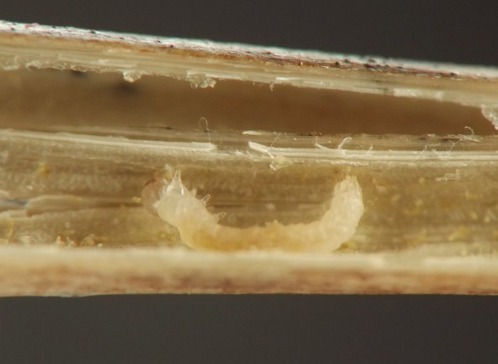
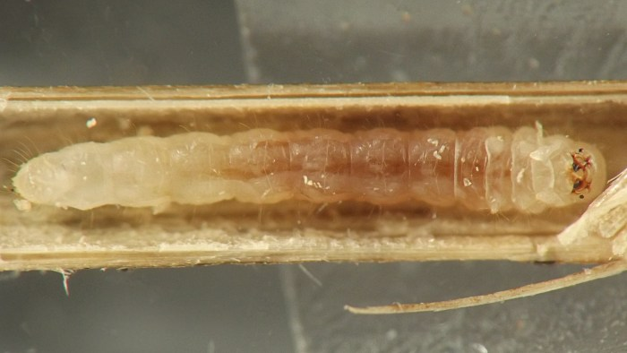
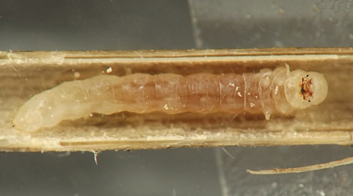
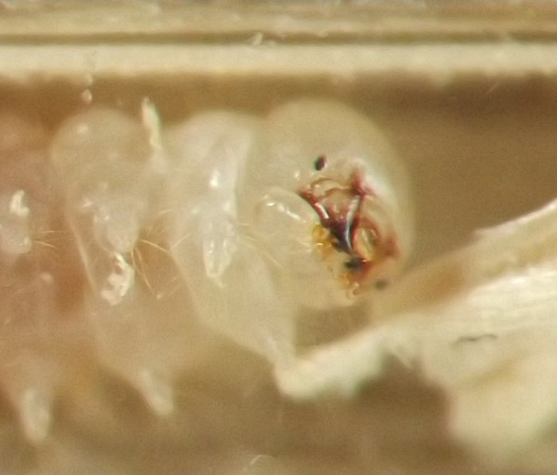
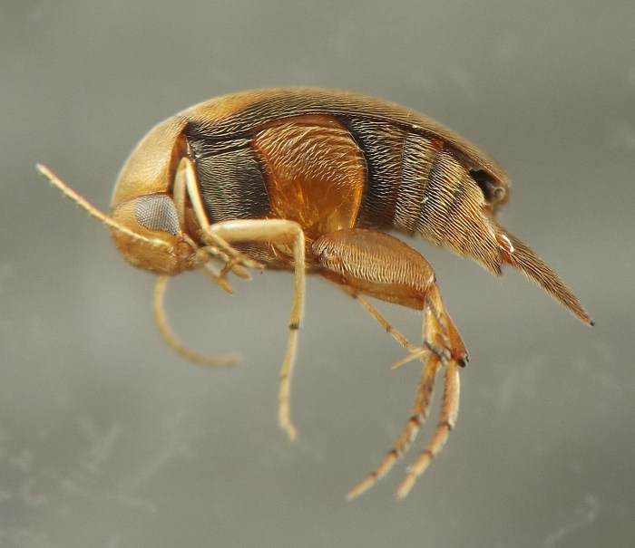

Stem borer (Coleoptera: Mordellidae) in Aquilegia
| Record no.: | 0067 |
|---|---|
| Feeding guild: | Stem borer |
| Taxonomy: | Coleoptera: Mordellidae: Mordellistena sp. |
| Stages observed: | trace, larva, adult |
| Distribution observed: | IA |
| Hosts in Aquilegia: | A. canadensis (red columbine) |
I found a young larva in a senescent stem of the host in late October, 2022. It was pale whitish with darker mandibles and a pair of very short urogomphi. I successfully overwintered it and reared it to maturity over the following spring and summer.
At first, when I removed the larva from refrigeration in early March, I held it in a short piece of the original columbine dead stem, but it eventually tunneled out most of the contents of this stem piece, so I inserted the entire stem piece, with larva inside, into a larger, hollow but still somewhat pithy section of Campanulastrum americanum dead stem. By late May there was significant frass accumulation inside the Campanulastrum piece, indicating the larva had been feeding; close examination of the plant material suggested the larva had eaten more of the columbine stem, fed on at least one of the two woody dead twig stubs that were being used as caps for the Campanulastrum piece, and consumed some of the pithy lining of the Campanulastrum piece. I then removed the remnants of the columbine piece, inserted a section of pithy Echinacea dead stem into one end of the hollow Campanulastrum piece containing the larva, and capped the other end of the Campanulastrum piece with more Echinacea. The larva finally completed its feeding and pupated in this habitat, and the adult emerged in mid-August.
The elytra of the adult were a rather uniform orangish-brown color, while the underside of the thorax and abdomen were a combination of reddish-brown and dark brown, and the eyes were blue-gray. I was able to photograph the series of ridges on the rear leg, which can be useful for identification purposes in the family Mordellidae (Bartlett et al. 2023). The adult was identified to genus by Belov (2024) via photos on BugGuide.net.

 Prev
Prev
{kind=link}
{kind=link}

{kind=link}

{kind=link}
{kind=link}

{kind=link}

{kind=link}
{kind=link}
{kind=link}
{kind=link}
Coll. 10/23/22, photos of young larva same day (01,03), photos of older larva on 04/22/23 (04-07), adult em. ~08/10/23, photos of adult on 11/11/23 (08-10).
- Bartlett, T., cotinis, Moisset, B., Gross, J., Harpootlian, P., Moyer, T., Büche, B., and V. Belov. 2023. Family Mordellidae - tumbling flower beetles. Family info page on BugGuide.net. Retrieved December 2, 2023 from https://bugguide.net/node/view/144.[return to in-text citation]
- Belov, V. 2024. Comment on contributor post at BugGuide.net. Retrieved March 10, 2024 from https://bugguide.net/node/view/2316552. [return to in-text citation]
Page created: February 5, 2026. Last update: none